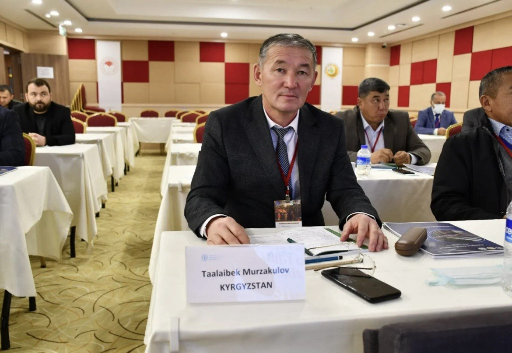
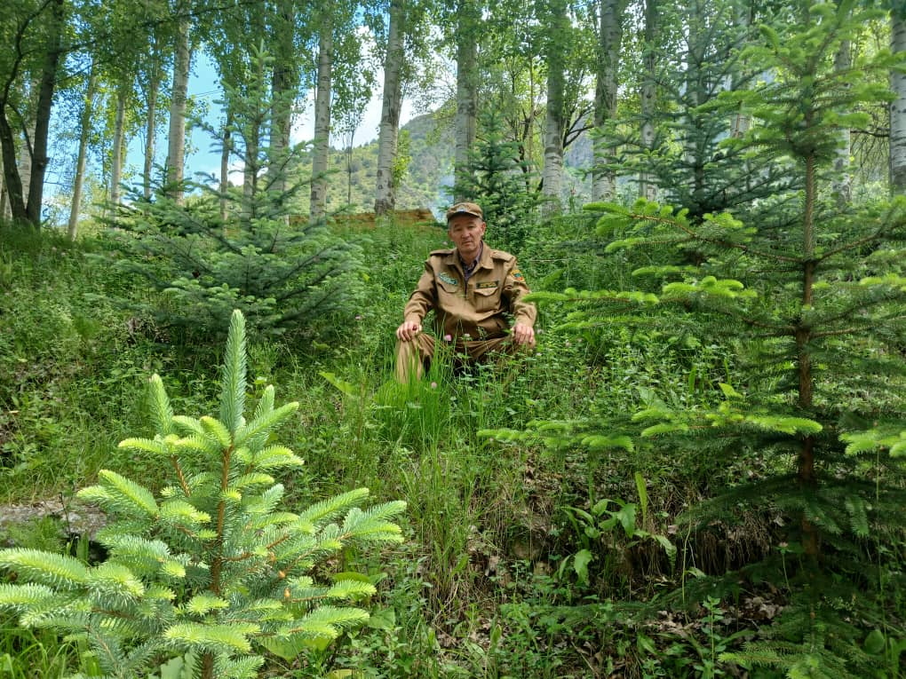
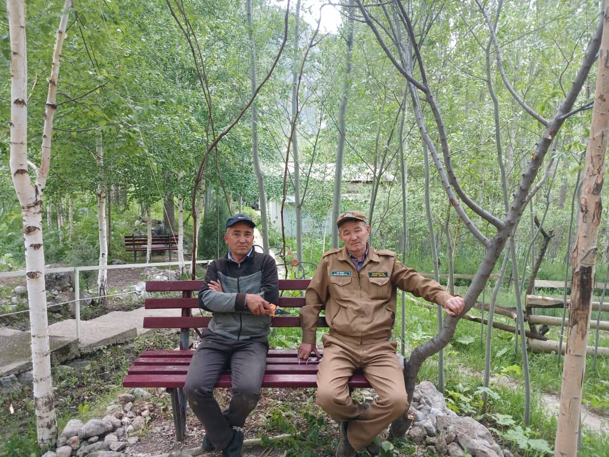
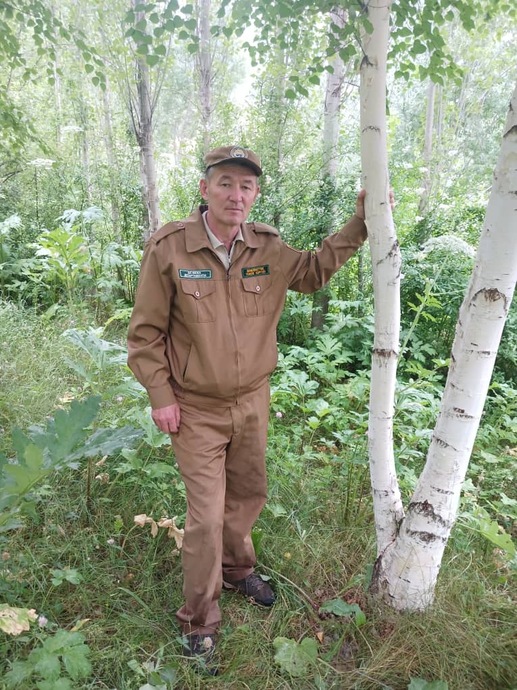

Сотрудники

Имя сотрудника
Должность сотрудника

Имя сотрудника
Должность сотрудника

Имя сотрудника
Должность сотрудника
Баткенская область, Лейлекский район, Кыргызстан
Добро пожаловать в один из живописных уголков Кыргызстана. Здесь вас ждут горные пейзажи, чистый воздух, тишина, редкая дикая природа и возможность по-настоящему почувствовать красоту нетронутой природы.
Спланировать поездкуПриродный парк Саркент расположен в Лейлекском районе Баткенской области и является одним из уникальных природных мест юга Кыргызстана. Парк известен своими горами, свежим воздухом, красивыми ландшафтами и богатым природным разнообразием.
Это место подходит для экологического туризма, отдыха на природе, знакомства с редкими видами животных и наблюдения за живописными природными пейзажами. Саркент привлекает тех, кто ценит спокойствие, чистоту природы и красоту диких мест.
Познавательные прогулки и экскурсии по природным маршрутам парка.
Организованные посещения для знакомства с природой, экологией и охраной окружающей среды.
Поездки для любителей природы и фотографии с возможностью увидеть красивые виды парка.

Директор природного парка Саркент отвечает за сохранение природного наследия, развитие экологического туризма и организацию деятельности парка. Здесь вы можете разместить краткую биографию, достижения и обращение к посетителям.
Должность сотрудника
Должность сотрудника
Должность сотрудника



Откройте для себя виды, которые запоминаются навсегда.
Адрес: Баткенская область, Лейлекский район, Кыргызстан
Телефон: +996 XXX XXX XXX
Email: info@sarkentpark.com
Часы работы: Пн–Пт, 09:00–18:00